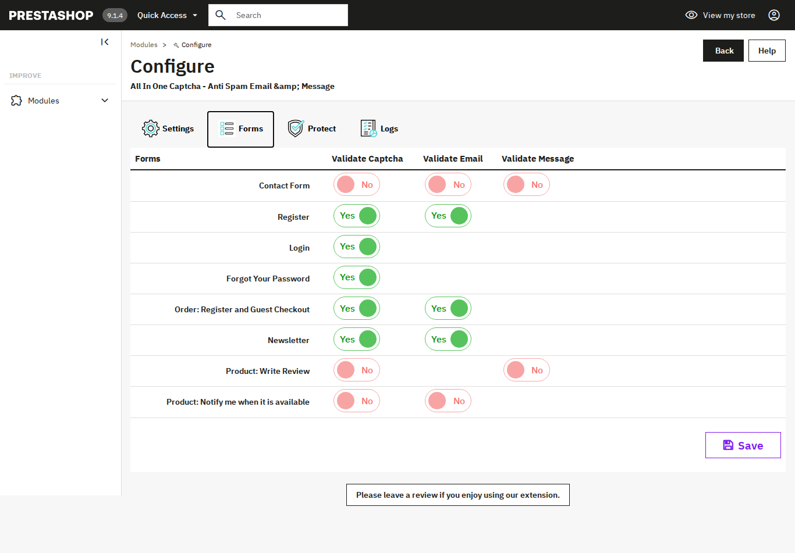

Choose the forms to protect
3.1 The Forms tab
Open the Forms tab to see the list of your store forms. Each row has switches for the checks you can turn on for that form.

3.2 The switches
- Validate Captcha: asks the visitor to solve the captcha before the form is sent.
- Validate Email: checks the email address used in the form.
- Validate Message: checks the message text in the form.
Some forms do not have an email or message field, so those switches do not appear for them.
3.3 Save your choices
- Turn on the switches for the forms you want to protect.
- Click Save at the bottom of the tab.
Hummingbird theme On the Hummingbird theme, leave the contact form and the product review form off. Use an online captcha (reCAPTCHA or Turnstile) on the other forms.